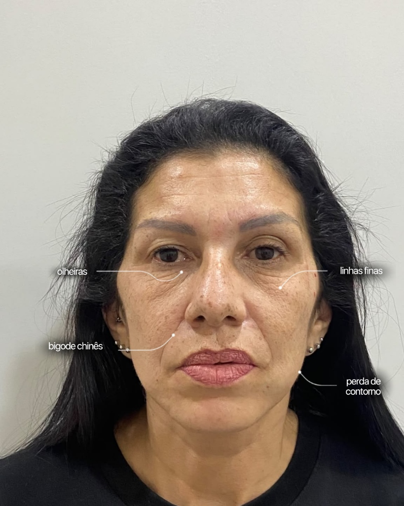
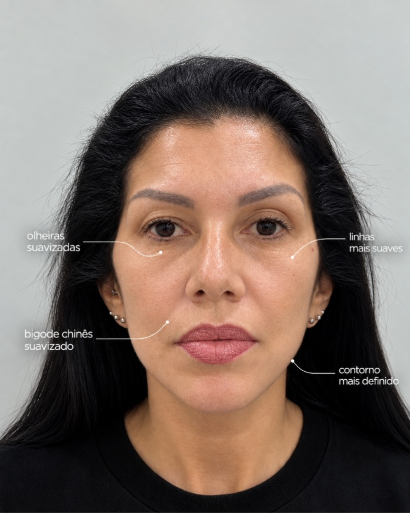

Protocolo Rejuvenescedor
Previna e Suavize Marcas de Expressão em Uma Única Sessão.
Resultados naturais e sob medida para quem busca prevenir ou tratar rugas, garantindo um visual descansado e elegante.
POR QUE ESCOLHER
Benefícios do Protocolo Rejuvenescedor
Suavização de Rugas
Relaxa a musculatura facial de forma precisa, eliminando marcas na testa, glabela e pés de galinha sem rigidez.
Prevenção do Tempo
Evita que linhas de expressão dinâmicas se tornem rugas estáticas profundas e definitivas com o passar dos anos.
Expressão Natural
Técnica avançada personalizada que preserva sua mímica facial espontânea, garantindo aspecto descansado e leve.
Sem Cortes ou Repouso
Aplicação rápida em cerca de 30 minutos na própria clínica, permitindo que você retorne imediatamente à sua rotina diária.
ANTES E DEPOIS
Resultados Reais e Naturais
Expressão leve, contorno relaxado e naturalidade — cada caso é avaliado individualmente.
PROVA SOCIAL
O que dizem nossas clientes
Avaliações verificadas de clientes que passaram pelo Protocolo Pink Luxo.
"Fiz o Protocolo Rejuvenescedor na Pink Luxo e ficou surreal de natural! Tinha muito receio de ficar congelada, mas meu rosto está leve, descansado e jovem."
"Minhas rugas na testa e pés de galinha sumiram. Todo mundo elogia dizendo que pareço mais relaxada. Clínica maravilhosa no Tatuapé!"
"Atendimento impecável! O procedimento foi super rápido, não senti dor com a anestesia e o resultado ficou perfeito. Valeu cada centavo!"
"Atendimento impecável das especialistas da Pink. Me senti super acolhida e segura desde o primeiro momento. Já quero voltar!"
"Em menos de uma semana já vi o efeito completo. Minha pele ficou lisa e sem vincos. Muito prático para quem não pode parar a rotina."
"O arqueamento da sobrancelha abriu meu olhar e tirou aquela cara de brava. O resultado na frente do espelho é surreal!"
"Estava com receio, mas a aplicação foi super delicada e indolor. A clínica é um luxo absoluto, super discreta e aconchegante."
"O melhor é que continuo expressiva, porém sem aquelas marcas pesadas na testa. Minha pele tá com outra textura, super viçosa."
"Recuperou a minha autoestima de um jeito maravilhoso! Sentia que parecia sempre cansada, e agora estou renovada. Super recomendo!"
"Queria algo elegante para prevenir o envelhecimento. As especialistas entenderam de primeira. Entregaram tudo e mais um pouco!"
TRANSFORMAÇÃO REAL
Mapeamento da Transformação
Veja a evolução dos pontos de atenção tratados na paciente através do Protocolo Rejuvenescedor.


SOBRE A CLÍNICA
Excelência e Segurança na Pink
Infraestrutura premium e ambiente projetado para garantir o seu máximo conforto, em um espaço estritamente discreto e privativo — do seu primeiro atendimento à finalização do procedimento.
Na Pink Luxo, somos referência em estética avançada. Entendemos que cada rosto exige precisão, protocolos altamente seguros e absoluta naturalidade nos resultados.
- 10+
- Anos de experiência
- 6.000+
- Clientes atendidas
CONTATO
Localização & Contato
Estamos no coração do Tatuapé, com estacionamento próximo e fácil acesso.
Endereço
Rua Tijuco Preto, 426 — Tatuapé
São Paulo · SP · CEP 03316-000
Horário de atendimento
Segunda a Sexta · 10h às 20h
Sábados · 10h às 18h
FAQ
Perguntas Frequentes
O Protocolo Rejuvenescedor (à base de Toxina Botulínica) atua relaxando temporariamente os músculos faciais responsáveis pelas rugas de expressão. Ao modular a contração muscular em pontos estratégicos, a pele fica visivelmente mais lisa e os vincos são suavizados com alta precisão.
De forma alguma! Na Pink Luxo prezamos pela técnica do Protocolo Rejuvenescedor Natural. Realizamos uma dosagem calculada minuciosamente para respeitar a anatomia e a expressividade individual de cada cliente. Você conquista um rosto descansado, jovem e iluminado, preservando sua espontaneidade e charme natural.
O Protocolo Rejuvenescedor é extremamente versátil! Tratamos a testa (linhas horizontais de expressão), a glabela (marcas de preocupação entre as sobrancelhas) e os pés de galinha (ao redor dos olhos). Também realizamos elevação sutil da cauda da sobrancelha (efeito lifting) e atenuação de rugas nasais (bunny lines).
Prezamos pelo seu conforto absoluto. Aplicamos previamente um anestésico tópico potente e utilizamos microagulhas de alta precisão importadas. O procedimento é rápido, seguro e muito tolerável — a maioria das clientes relata apenas uma sensação de leve picadinha.
Os primeiros efeitos começam a ser percebidos entre 48h e 72h após a sessão. O resultado final se consolida entre o 14º e o 15º dia. A duração varia entre 4 a 6 meses, dependendo do metabolismo, prática de exercícios intensos e características biológicas de cada organismo.
Não! Como é um procedimento não-cirúrgico e minimamente invasivo, você pode retornar ao seu trabalho e rotina no mesmo dia. Recomendamos apenas evitar deitar a cabeça, massagear a face ou praticar exercícios físicos pesados nas primeiras 4 horas após a aplicação.